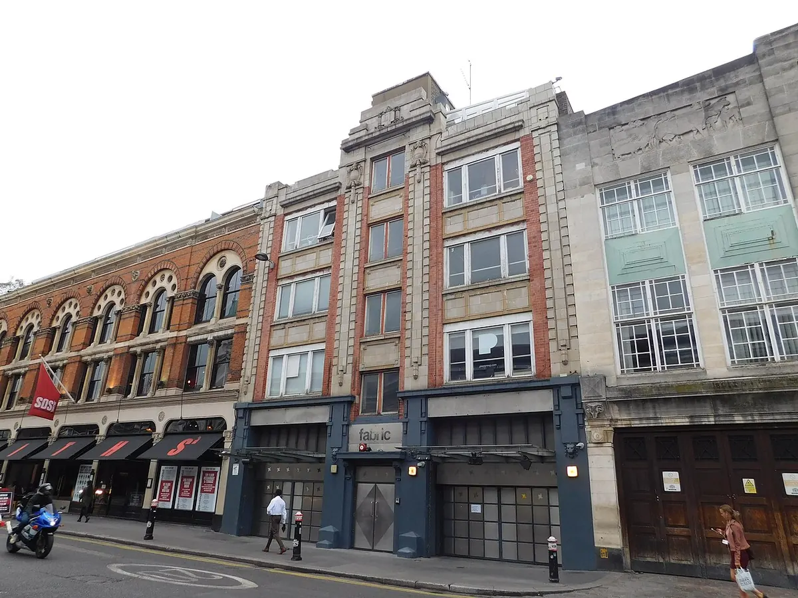
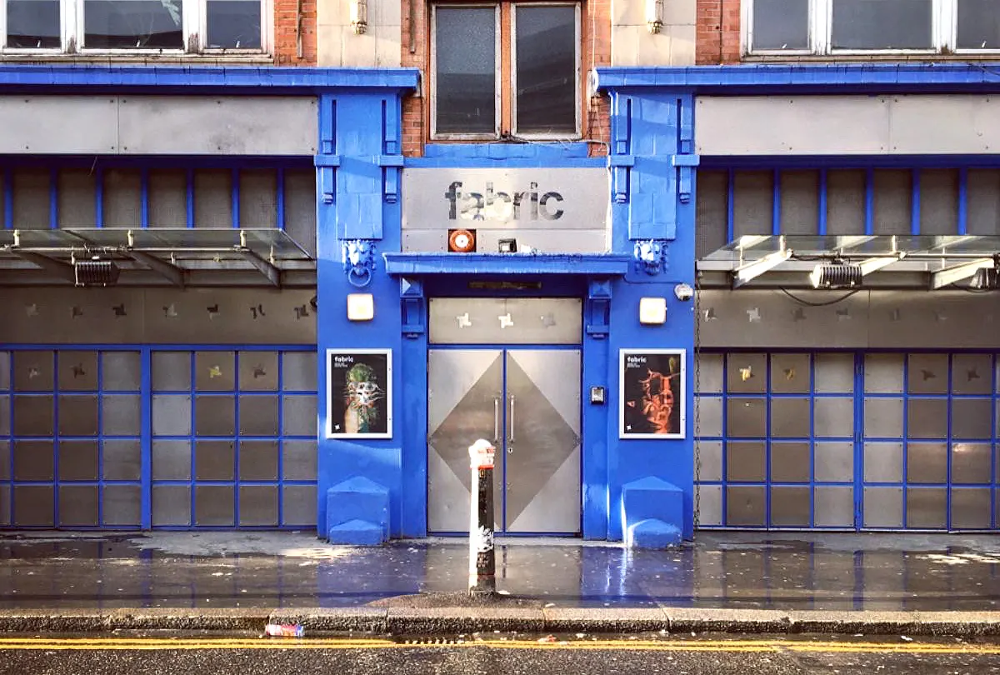
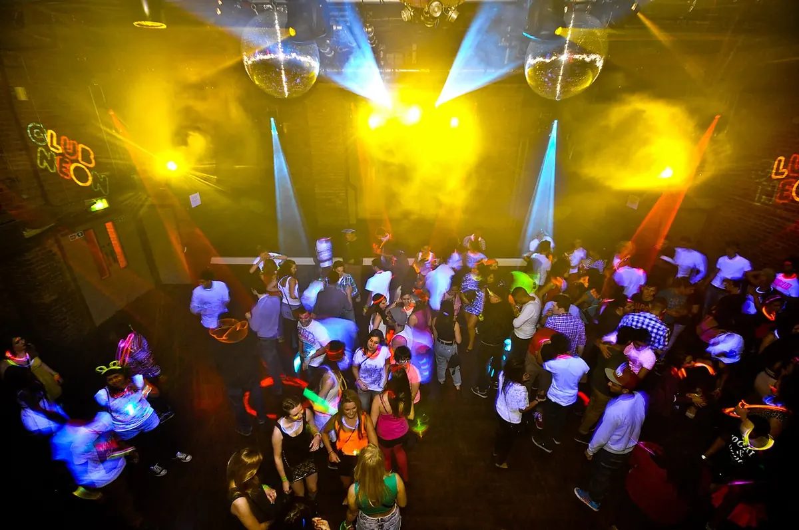

Club guide, London
fabric London: history, rooms, tickets and dress code
The Farringdon club that opened in 1999: how its three rooms work, when it opens, how tickets and the dress code work, and what happened in 2016.
One club, several questions.
Searches for fabric London, the fabric nightclub or the fabric club all point to one venue in Farringdon. Most people want one of a few things: when the doors open, how to buy a ticket, what to wear, or why the club was shut in 2016. The club's own site answers most of them, but across a dozen pages.
This guide puts those answers in one place, dated, with the 2016 timeline taken from the council statement and the press of the time. It also keeps a list of what no source states. For other London rooms there is the London clubs guide. If you are looking for the closed Rotherhithe venue, see the Printworks London guide.
fabric sits alongside 22 other rooms in the best clubs in Europe guide.
What is fabric London?
The short fabric London history is that it is an electronic music club in a Victorian building on Charterhouse Street. Time Out's account says the cellar was once the Metropolitan Cold Stores, a meat store, and that founder Keith Reilly took almost ten years to find the right place. Mixmag names Reilly and Cameron Leslie as the men behind it and dates the opening to 1999. I found no source for the exact opening date, so this page gives the year only.

The club writes its name in lower case, and so does this page. Its own FAQ describes the music policy by night: Fridays carry a range of electronic styles, Saturdays are mostly house, techno and electro, and Sunday is a weekly party called Come As You Are for forward-looking house and techno. Friday also holds the club's FABRICLIVE nights, which the FAQ describes as UK sounds and bass-led genres.
The residents page lists three founding residents. Craig Richards has played more than 700 Saturday nights since 1999, according to the club. Terry Francis and Ricardo Villalobos are the other two, and the page says Villalobos first played Room 1 more than 20 years ago.
The club also runs record labels (fabric Records, fabric Originals and Houndstooth) and a mix series, and it marked its 25th birthday in 2024 with a year of events in London and abroad.
Tickets
fabric London tickets are sold through Resident Advisor, which the club's site links to from its listings and its Buy Tickets button. This page quotes no prices. The club's own site does not publish them, and the Resident Advisor listing could not be read when this page was written. Prices are set per night, so check the listing for the event you want.
| Route | What the club's FAQ says |
|---|---|
| Advance ticket | Barcodes are sent through the RA Guide app or the members' login area 48 hours before the event, to prevent touting. |
| Sold-out nights | Resident Advisor offers a resale service. |
| On the door | Some tickets are held back. If advance tickets sell out, more go on sale from 11pm. Re-entry is not allowed. |
| Student | Student tickets are sold through Resident Advisor and on the door with valid UK student photo ID. Some institutions are excluded. |
| fabricfirst membership | Members get guest list entry and queue jump on most nights. The homepage says membership is from £7 per quarter. |
| Paying guest list | None. The club says it does not offer one. |
Check the entry time printed on the ticket. The entry policy explains that tickets are valid all night, but Early Entry tickets must be used by the stated time and Entry After tickets only after it. Arriving outside that window means paying an upgrade fee. The last entry is always one hour before the event ends.
Opening times and address
The fabric London address is 77a Charterhouse Street, London EC1M 6HJ. The official directions say to walk from Farringdon station towards Smithfield Market and turn right onto Charterhouse Street. Farringdon is served by the Circle, Hammersmith & City, Metropolitan and Elizabeth lines. Chancery Lane on the Central line is close, and the club notes it runs all night on Friday and Saturday.
The fabric London opening times in the FAQ are:
| Night | Regular hours | Note |
|---|---|---|
| Friday | 11pm to 6am | Occasional longer parties |
| Saturday | 11pm to 6am | Occasional longer parties |
| Sunday | 11pm to 4am | Some Sunday events start earlier |
| Weekdays | As listed | External events only, hours on the event page |
The listings read on 4 October 2026 show how much the hours vary. Friday 9 October runs 23:00 to 06:00, Saturday 10 October runs 23:00 to 07:00, and Sunday 11 October is listed as 18:00 to 02:00. The club does not publish set times in advance. It says they are posted around the club on the night and sometimes shared in its WhatsApp and Telegram communities.
What is the dress code?
The club's FAQ gives its fabric London dress code in two sentences. Guests are encouraged to dress as they like, but the club reserves the right to refuse entry to anyone whose clothes it feels are not suited to the night. Business suits, flags and glow wear are not permitted, and flags are specifically banned from the dance floor.

Nothing on the official site lists specific shoes, brands or colours, so any wider rule you read elsewhere is not the club's. Phones are covered separately: the club has a no photo policy, introduced in June 2021, and its FAQ says stickers are put on phone cameras at the door. Phones are still allowed for finding friends and ordering a ride.
Capacity and rooms
The fabric London capacity for a club night is not stated on the club's site. The private hire page gives maximum guest numbers by room: up to 1000 in Room 1 and the Mezz Bar, up to 500 in Room 2 and the Sunken Bar, and up to 150 in Room 3. It describes the whole venue as 25,000 square feet with five bars and a hire capacity of 100 to 1,500. Mixmag's 2016 tribute gave the club's capacity as 2500. Those figures come from different purposes and years, so no single number is safe to quote for a night out.
Searches for fabric London room 1 usually mean the main room, which the club writes as Room 1 and Room One. The three rooms are connected:
| Room | Hire maximum | Bar | Access, per the club |
|---|---|---|---|
| Room 1 | 1000 | Mezz Bar | Wheelchair accessible |
| Room 2 | 500 | Sunken Bar | Reached by a steep ramp, may need assistance |
| Room 3 | 150 | None listed | Not wheelchair accessible |

Room 1 has a dance floor with its own history. The club says it was designed around Bodysonic transducers, with a quadraphonic speaker system, by Keith Reilly and Dave Parry, and that it has been rebuilt as the BodyKinetic floor with Powersoft. The old floor needed more than 450 transducers and the new one uses 36. The club also says Rooms 2 and 3 have new sound systems co-designed with NNNN Audio, the first full redesign of Room 2 since 2016 and of Room 3 since 2018. I found no date on the dance floor post, so this page gives none.
The club has seating opposite the Sunken Bar between Rooms 1 and 2, and a smoking area open all night. A quieter mezzanine above Room 1 is open at some events. The accessibility page lists a lift 73 centimetres wide and says step-free access depends on it working, with a WhatsApp channel for status.
Line-up and events
The fabric London lineup changes weekly, and the club lists it on its What's On page, with each event linking to Resident Advisor. On 4 October 2026 the listings included Aaron Hibell, KiNK, Slam and The Tunegirl on Saturday 10 October and The Martinez Brothers on Sunday 11 October. These are examples from one day, not a schedule, so check the page.
The fabric London events calendar also includes the FABRICLIVE Friday nights, and a 27th birthday night was listed on the same page. The homepage announces a four-year partnership with St Paul's Cathedral, which makes the club the cathedral's exclusive partner for contemporary music.
For a sense of the rooms, three sets were filmed at the club. Josh Caffe played Room One in 2021 for Beatport's London Unlocked series. In 2014 Boiler Room filmed a night with fabric that included Swindle playing with a live band and a back to back session from Elijah and Skiliam, Royal-T and Flava D.
What happened in 2016?
Why fabric London closed in 2016 starts with two deaths. The joint statement from Islington Council and the club says an 18-year-old man died on 25 June 2016 after a night at the club, and another 18-year-old died on 6 August. On 10 August the Metropolitan Police applied for a review of the licence, and on 12 August a council sub-committee suspended it.
On 6 September, after a hearing that Resident Advisor reported lasted more than six hours, the sub-committee revoked the licence. Its chair said a culture of drugs existed that management and security appeared incapable of controlling. Mixmag put the loss at 250 jobs, and a change.org petition passed 140,000 signatures, according to Resident Advisor.
The fabric London reopening followed an appeal. On 21 November 2016 the club and Islington Council confirmed an agreement in Highbury Magistrates Court, a week before a four-day appeal hearing was due to start. The council statement lists the new measures:
- ID scanning at the door.
- Lifetime bans for anyone found with drugs, or trying to buy them, in the club.
- Enhanced monitoring and external auditing, new lighting and CCTV, and a new security company.
- No customers under 19 from 20:00 on Friday until 08:00 on Monday, or on any core club night.
Time Out reported on 2 December 2016 that a reopening weekend was planned for 6 to 8 January 2017, with Craig Richards and Terry Francis returning on 7 January. The club's current rule is 18 and over. I found no source explaining when the under-19 condition changed, so this page does not claim a date for it.
For the debate at the time, Boiler Room streamed a panel titled Can Nightlife be Saved? Live from Fabric, with the MP for Islington South and Finsbury, Goldie, and co-founder Cameron Leslie.
fabric London FAQ.
What is the fabric London age limit?
18 and over, with valid original photo ID, unless an external event states otherwise. The club accepts a passport, foreign national ID card, driving licence or Home Office approved PASS hologram, and scans it at the door. No ID means no entry.
Does fabric London have a cloakroom or lockers?
The fabric London cloakroom appears in the club's FAQ: items left there can be collected with the ticket on Fridays, Saturdays and Sundays from 10pm to 11pm and on Tuesdays from 4pm to 8pm. The official site says nothing about fabric London lockers or about cloakroom prices, so this page gives neither.
How strict is fabric London security?
fabric London security starts at the door. Entry searches are mandatory and bags are screened through metal detectors. More searches can happen inside, and the club operates a zero tolerance drug policy, with disposal bins in the queues. Anyone found with illegal drugs is banned and reported to the police, and anyone asking for or offering drugs is banned for life.
What time does fabric London open?
Friday and Saturday nights run 11pm to 6am and Sunday nights 11pm to 4am, with occasional longer parties. The last entry is one hour before an event ends.
Is there a dress code at fabric London?
Yes, a loose one. Business suits, flags and glow wear are not permitted, and the club can refuse entry to anyone whose clothes it feels do not suit the night.
Can you take photos at fabric London?
The club asks guests not to. It has had a no photo policy since June 2021 and puts stickers on phone cameras at entry.
Sources.
- Opening times, dress code, age limit, search policy, cloakroom, music policy and directions, read on 4 October 2026: fabric London FAQ.
- Entry rules, ID and ticket entry times: entry policy. Room access and the lift: accessibility page. Photos: no photo policy.
- Hire capacities by room and venue size: private hire page. Founding residents: residents page. Listings and ticket links: What's On.
- Room 1 dance floor and sound systems: dance floor post and Rooms 2 and 3 post.
- 2016 council and club statement, 21 November 2016: Time Out. Revocation, 7 September 2016: Resident Advisor. Reopening weekend, 2 December 2016: Time Out.
- Building history and opening year: Time Out and Mixmag, which also gives the 2016 capacity of 2500.
Continue reading
Read next.
 Rave spots~10 min read
Rave spots~10 min readBerghain: Panorama Bar, Sound and Residents
Berghain explained: the former power station, Panorama Bar upstairs, Halle am Berghain, the Kantine, and the Ostgut Ton label.
Read article → Rave spots~11 min read
Rave spots~11 min readBest Clubs in NYC: Nightclubs for House and Techno, Then and Now
Nowadays, Basement, Public Records, Good Room and Elsewhere: the best clubs in NYC for house and techno now, and the history from the Loft to Output.
Read article → Rave spots~7 min read
Rave spots~7 min readBest Clubs in Tokyo: WOMB, Contact and the Ban on Dancing
WOMB, Contact, Vent and Circus Tokyo: the best clubs in Tokyo for house, techno and bass music, and the 68-year law against dancing that shaped them.
Read article → Rave spots~6 min read
Rave spots~6 min readBest Clubs in Budapest: A38, Instant-Fogas and Turbina
A38's converted cargo ship, the seven rooms of Instant-Fogas and Turbina's techno nights: the best clubs in Budapest now, and the ruin bars several grew out of.
Read article →